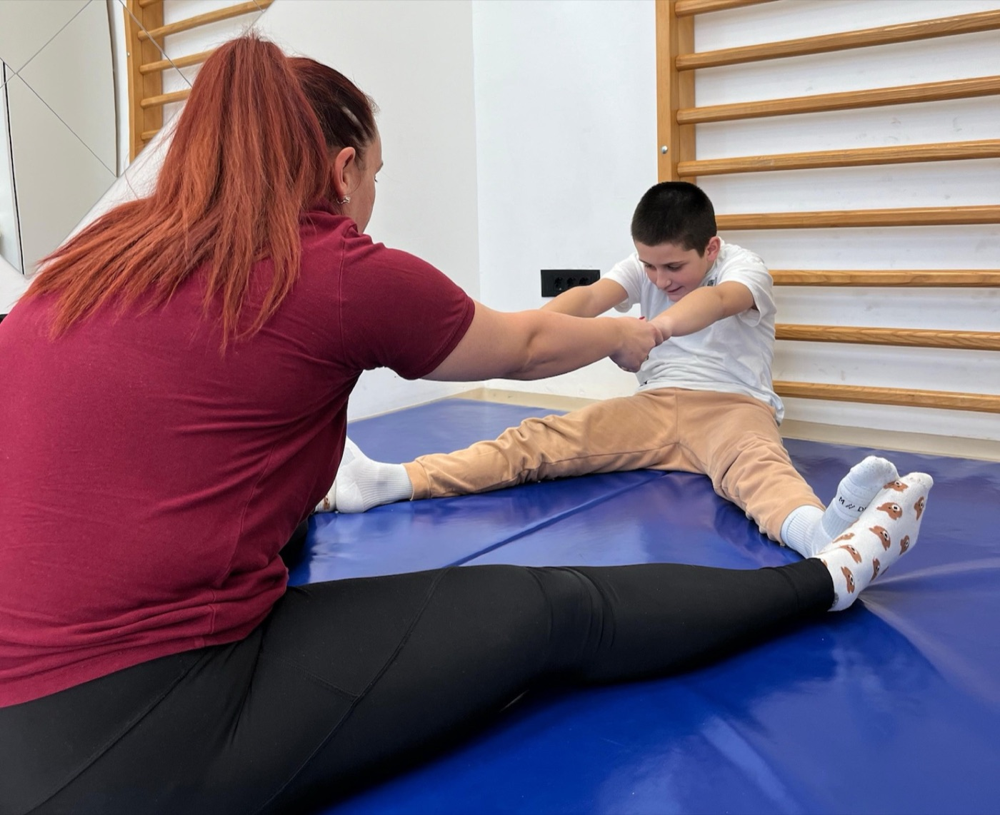
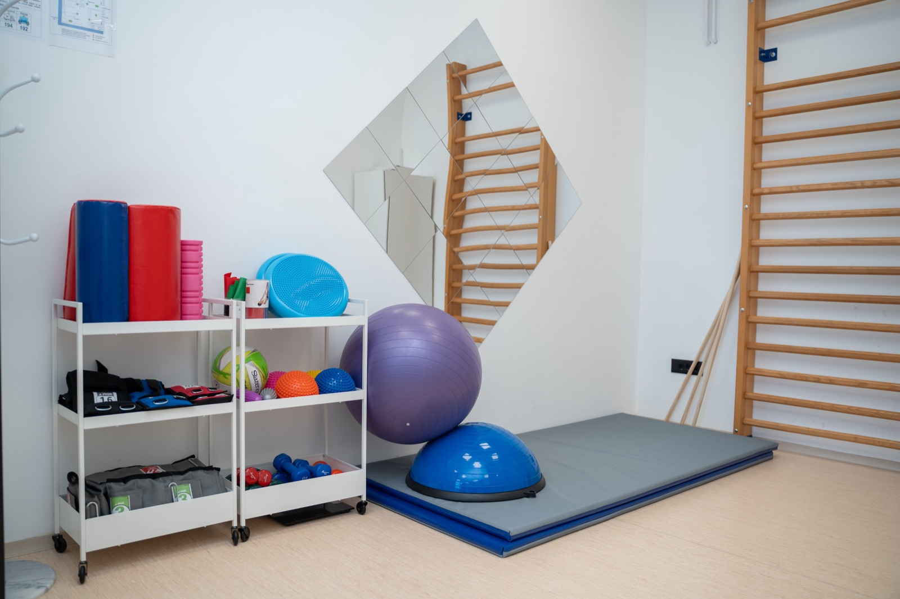
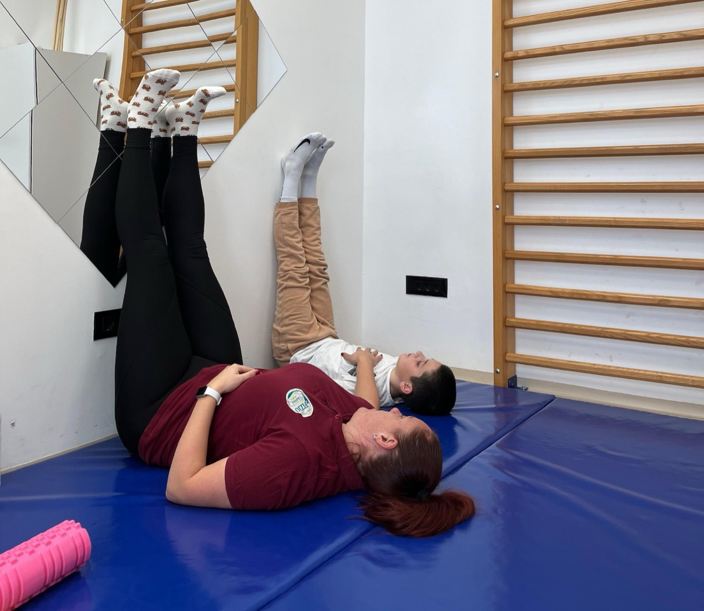
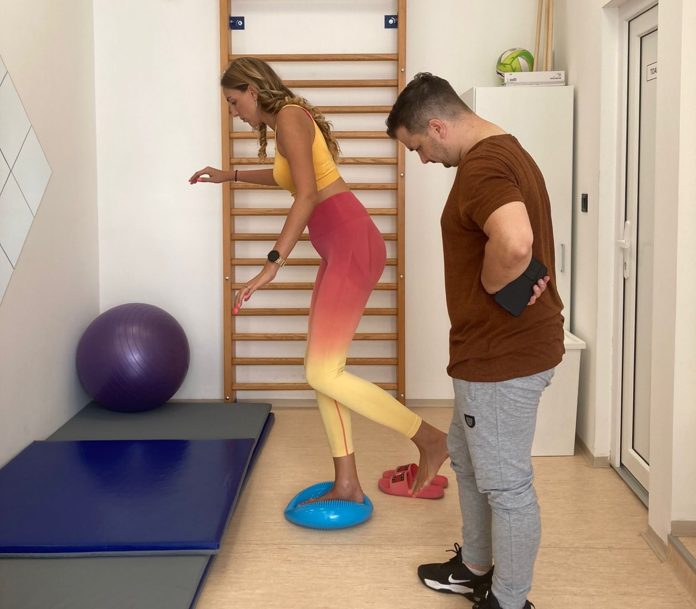

Kineziterapija — vođene vežbe koje vraćaju pokret
Kineziterapija je „lečenje pokretom" — individualno vođene vežbe sa terapeutom koji posmatra, ispravlja i postepeno podiže opterećenje. Nema aparata: samo vaše telo, par rekvizita po potrebi (elastične trake, lopte, podloge za ravnotežu, slobodni tegovi, ribstoli) i plan koji se menja iz nedelje u nedelju, prateći vaš napredak. Cilj nije „odraditi vežbe", nego vratiti pun, bezbolan pokret — i naučiti vas šta da radite sami, da biste rezultat zadržali.

Kako izgleda seansa
Procena pokreta
Prva seansa je razgovor i pregled — istorija tegoba, obim pokreta, snaga, ravnoteža, šta vas tačno provocira. Tu se određuje gde počinjemo i koji su realni ciljevi za naredne nedelje.
Progresivni plan
Vežbe počinju lagano i tehnički ispravno — terapeut posmatra, ispravlja, doseže pravu mišićnu grupu. Kako vam telo dozvoljava, raste obim, težina i složenost pokreta.
Plan za kući
Iz svake seanse odlazite sa kratkim setom za kuću — 10–20 minuta dnevno, sa jasnim uputstvima. Napredak se gradi između seansi, ne samo u sali.
Za koga je kineziterapija
Kineziterapija je „svestrana" — koristi i nekome ko se oporavlja posle ozbiljne operacije, i nekome ko hoće da se vrati trčanju bez da se opet povredi. Ako se prepoznajete ispod, plan radimo baš za vas.
Rehabilitacija i bol
- Posle operacije kolena (LCA/ACL, meniskus, ugradnja proteze) — povratak hodu, stepenicama, sportu
- Posle operacije kuka ili ramena — vraćanje obima pokreta, snage i funkcije
- Posle preloma — kada se skine gips, a snaga je „nestala"
- Hroničan bol u krstima — jačanje jezgra (core) i glutealne muskulature
- Bol u vratu i „kancelarijsko držanje"
- Bol u kolenu (artroza) — jačanje koje odlaže ili izbegava operaciju
- „Smrznuto rame" (frozen shoulder) — progresivan obim pokreta i snaga
- Učestala uganuća skočnog zgloba — propriocepcija (osećaj položaja tela u prostoru) i ravnoteža
Snaga, prevencija i performance
- Prevencija padova kod starijih — ravnoteža i samopouzdanje u hodu
- Oporavak posle porođaja — karlično dno, jezgro (core) i držanje
- Rehabilitacija dijastaze (razdvojeni pravi trbušni mišići)
- Skoliotične disbalansne grupe mišića — jačanje slabije strane
- Plan povratka trčanju posle povrede — postepeno, bez recidiva
- Rekreativci i sportisti — sport-specifična priprema (presezona, off-sezona)
- Sedeći radnici — bolji pokret, manje bola, neuromuskularna kontrola (kontrolisan rad nerva i mišića)
- Adolescenti — rastovi bolovi, držanje, sportske „sitnice"


Koliko traje i kako se planira
Polazni okvir — sve podešavamo prema vašoj dijagnozi, fazi oporavka, ciljevima i tempu kojim napredujete.
- Trajanje sesije
- 45–60 minuta
- Frekvencija
- 1–3 puta nedeljno (zavisno od faze)
- Tipičan kurs
- 8–24 sesije (akutno → oporavak → povratak funkciji/sportu)
- Vežbe za kući
- 10–20 minuta dnevno, prilagođeno opremi koju imate
- Provera napretka
- na svakih 4–6 sesija
- Rekviziti
- trake, lopte, podloge za ravnotežu, slobodni tegovi, ribstoli

Šta da očekujete
Prva seansa je detaljna procena — istorija, obim pokreta, snaga, ravnoteža i šta vas tačno boli. Prvih nekoliko susreta je nežno i „edukativno": učimo vas da vežbe radite tehnički ispravno, sa pravom mišićnom grupom. Kako se telo navikava, težina i složenost rastu. Blaga upala mišića sutradan je normalna; oštar bol nije i o tome odmah javljate. Ponesite udobnu sportsku odeću i čistu zatvorenu obuću za salu (ili čarape) i flašicu vode.
Kada kineziterapija nije sama dovoljna
Kineziterapija nema klasične „zabrane" kao tretmani aparatima — uvek se nešto može vežbati. Postoje, međutim, situacije u kojima vežbe nisu prvi korak ili idu u paru sa drugom terapijom: akutno upaljen, otečen i topao zglob (prvo ga smirujemo, pa krećemo), nedijagnostikovan bol koji traži snimanje ili lekarsku evaluaciju, ozbiljnija srčana ili plućna oboljenja sa potrebnom dozvolom kardiologa/pulmologa, sveža fraktura (čekamo „zeleno svetlo" hirurga), ozbiljniji problemi sa ravnotežom bez nadzora kod kuće (plan tada radimo bezbedno za samostalni rad), kao i određene faze trudnoće (sarađujemo sa vašim ginekologom). Kratko pitamo i prilagođavamo — bezbednost prvo.